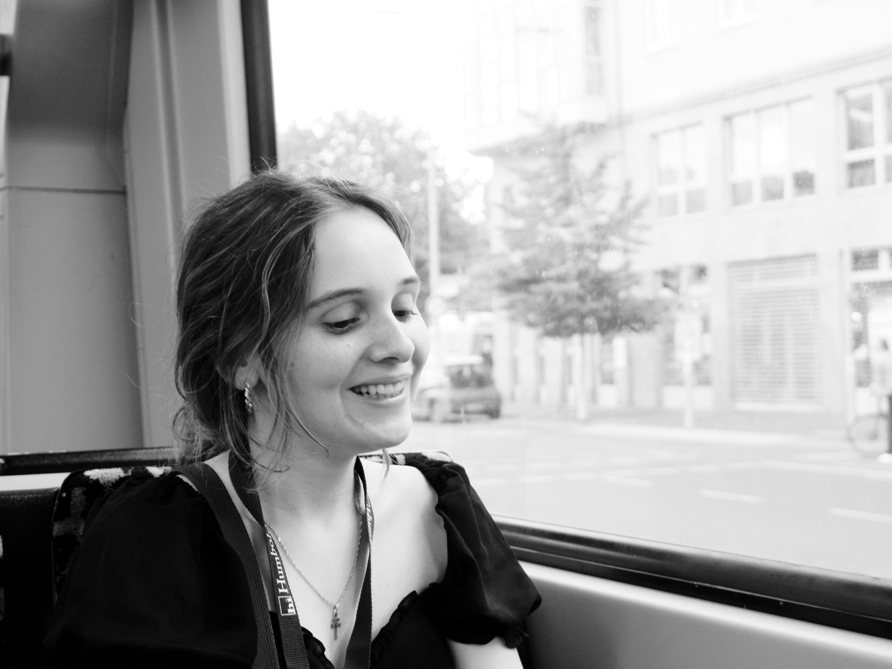
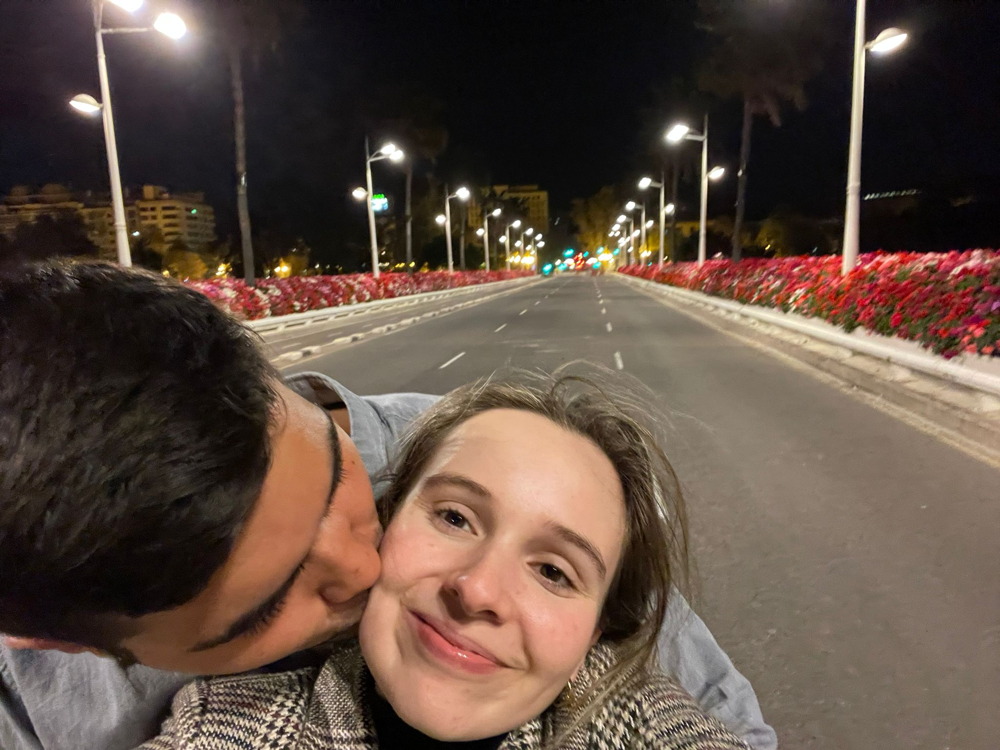
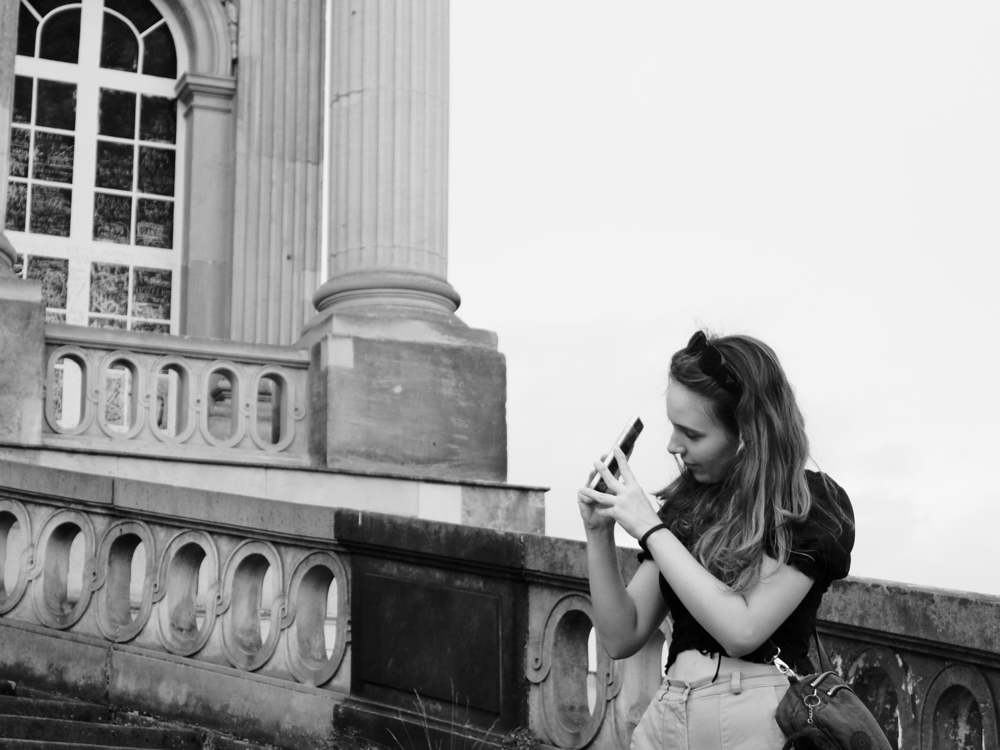
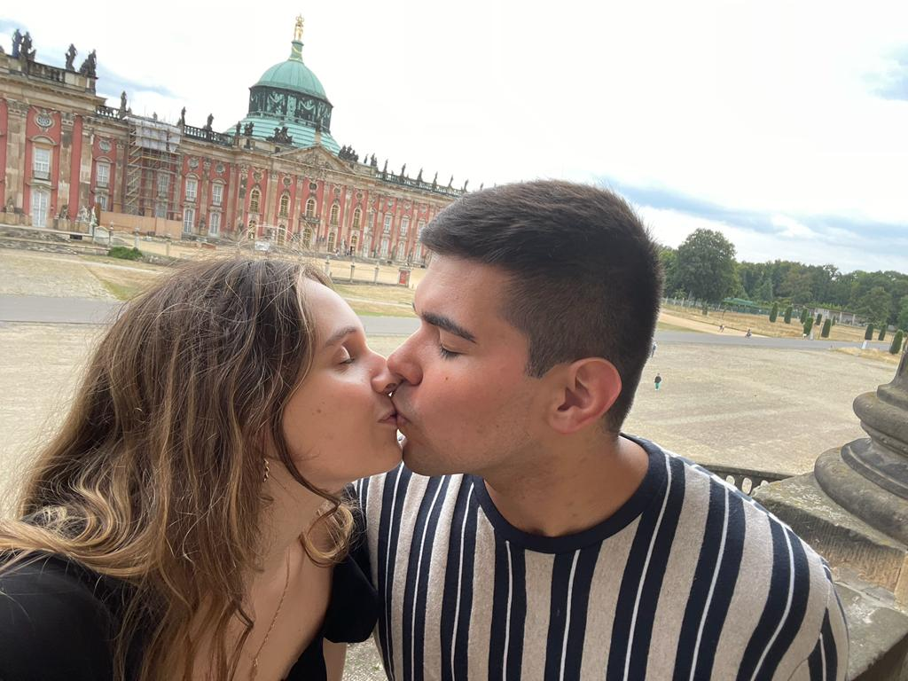

Beyond Miracles: Finding You Was a Once In a Lifetime Occurrence

Chapter 1
There she stood: smiling, perhaps out of politeness, at what her chauffeur was telling her. A warmth filled my whole being as I unconsciously registered the fact that she had just arrived in my life with five suitcases on the verge of exploding and she did not mean to leave - she was there to stay.
Something about her nervous, but curious look caught my attention from the very beginning. I immediately felt a sense of belonging with her - what hundreds of hours had I not spent with other people and never achieved such closeness like I did with her in less than an hour's time? Only God could tell you.
Right from the get go we started jazzing back and forth - it was a harmony of jokes, flirting, and unquenched curiosity to know more about one another. Sadly, this all came to an end, perhaps with only me to blame, when I introduced her to her peers. It wasn't until the next day that I would see her again.
The following morning, she and her newly-initiated magician classmates had to take an examination of their magical arts. It was my job to proctor their examinations and ensure that no dark arts were used. Her nervous, but persistent nature was apparent to no one else, but me - perhaps because of my new-found infatuation for her. It is against the Order of Wizards regulations to influence the outcome of the examination, but the temptation never left me. I saw uncertainty in her performance, but her determination was inspiring. I asked if she was satisfied with her performance, trying to help her without getting my ear talked off by the Council of Order.
We had many encounters throughout her learning journey as a class B 2nd witch where the attraction was palpable. The city of Berglain was known for its magical people and compendium of secrets. One such secret was the organization of flying carpets 'Limon'. A fellow wizard lent us his carpet and we flew from one corner of the city to the other in a matter of minutes. It wasn't the flying of the carpet that thrilled me, but rather the closeness to her. Another such encounter was in the ice cave where Humbleton School for Wizards and Witches kept its magical potions. The exit was closed off and chills ran through me, and not from the cold of the cave, but from the tension I felt with her - oh how I wish I had kissed here then and there.
Chapter 2
After a tiring ordeal of safely delivering the younglings all night, so they could continue their own training back home, I headed to the highest point of the tower which was the place in which Humbleton School for Wizards and Witches could the entire realm of Berglain. To my surprise I found fellow wizards, and to my delight there was one witch who had cast a love spell on me the moment I saw her. There she laid on a lounging chair of her own making - her magical prowess was not to be underestimated. After exchanging some stories over the campfire at the top of the tower, I felt weak. I needed to replenish my mana and energy with some ambrosia. It was, however, late and Berglain was known for being home to some dark wizards who melted into the shadows of every alley.
I announced my departure and a fellow Mexturian of mine asked me to kindly replenish his ambrosia stock, but I quickly forgot his request when the fire witch who set my heart ablaze volunteered to keep me company in my travels. We soon set off into the dark alleys of Berglain. We walked to the Dwarves' cornershop where they sold the ambrosia they stole from the gods. Soon after arriving, I noticed that my fatigue and my mana were fully replenished. It was all thanks to the powers of the fire witch. I dare not say her name yet, for beauty can only hold one name: hers. To tell you would be like divulging the secrets that belong to the highest ranking wizards from the Order. We made a quick stop to converse outside of the Dwarves' store. In what seemed like an hour, we had already managed to spend an hour in conversation. So we set off to observe the beauty of the sleeping city.
Berglain is a city full of wonders, but as the sun falls, the wretches of the city crawl out of their holes to prey on the unsuspecting victim. Those who are born without any magical abilities are called stillbloods and they typically keep away from Wizards towns like Berglain, but with the war on the East, more and more people from all walks of life end up in the streets of the city. Finding a job that can fill the table with feed and drink in a magical city such as Berglain is difficult enough as a mage, and virtually impossible for a stillblood. As such, they resort to crime, especially at night, when the Watchful Eyes of Order rest, they prey on innocent passersby.
Stillbloods can sense magic in ways us wizards and witches do not understand. With that in mind, they never approached us during our nightly adventure. However, feeling the magical heat radiating off her was a torture without being able to touch her. Knowing fully well that she could have defended herself, I still took her hand and excused my action as being a measure of safety. We both knew exactly what my intentions were. After having traversed historical monuments of the city, we stopped at the memorial for the cruelly murdered elves under the cruel and bloody rule of Adolorus Hitter - a most evil wizard with the power to hypnotize the masses and order them to do their bidding. While the memorial told of an unforgettable blotch in the history of the realm, we sat close while we held hands, and after enough tension we shared a peck. There was something romantic about love being able to flourish in a place where once only agony was known.
Chapter 3
The magic was short lived when the realization of how imminent my departure was. I was to return to my School of Trade found in Portortuga. There was a class of magicians to whom I belonged. Their wit and abilities with ancient, lost tongues could build new organizations that would purport to the progress of the world - or that was the idea. In more stillblood terms, this was known as 'Business Management'. The fire which she had set ablaze in my heart could not be quenched by any means. This led to my decision of disobeying my elders and staying another week at Humbleton. I was ready to spend the rest of my life with her and this intimidated her. The additional week I was to spend was naught more but a trial of proving my dedication and winning her heart.
She called me crazy, could not believe I would do such a thing for someone I barely knew, but we knew each other. Our souls linked by the eternal flame of the universe knew each other from past lives - we simply didn't know this yet. She continued her lessons in the mornings while I rested, but the first day there was no rest. I was nerve-racked with the possibility of missing the opportunity to share love with her.
Still, she questioned me “Why would you stay when neither of us knows if we will work out?” I promptly replied with what I had known from the very beginning “I want to give us a try. I would rather go home knowing I gave it my all in trying to make love flourish and failed than go home with all the possibilities of what could have been eating me on the inside." There was something about her beauty that filled my heart with anything she did.
As I waited for her to return from the school's extracurricular activities I met with a close friend of my named Kirsten. She hailed from a land near mine called Perumia. Our lands shared many customs and cultural aspects, and maybe that's why we got along well. We met at a herbary where they brewed magical concoctions one could drink to feel revitalized. An astro-magician approached us with the intent of uncovering who we were through the writings in the stars. After this odd encounter, I confessed my nerves to Kirsten, rationalized them and she encouraged me to fervently pursue a deeper connection with my new-found love.
My intention was to make the best of every day; squeeze as much time together in the little 24 hours we had in the day. I planned at the high tower of ravens that was known for its sights and atypical food. We visited the tower and found it was not to our liking. The food was in kind terms 'not to our liking'. Following dinner at the tower, we visited the high walls that divided the city of Berglain after the reign of Adolorus Hitter. Magicians now painted their dreams with mind magic on the walls which symbolized a liberated people. We concluded our romantic evening on the bridge that crossed the misty river where bards would play their tunes at night. I admit that my feelings were intense and some may say rushed, but I had never been more sure of anything or anyone in my life before. I knew that I wanted to build something lasting with her, and no one could take that feeling away from me.
Chapter 4
Every day I garnered more and more courage to show that I meant every word I shared with her. My love burned for her already and I wasn't aware that I was deep in love. In the morning I ventured out into Berglain to fetch treats from a nearby gnome who would brave the black woods and gather all necessary ingredients to make delights for our palate he called in Gnome-speak 'brownies', 'sandwiches', and 'cookies'. She had an affinity for gnome-made food only, but I did not mind. She rejoiced in being able to enjoy such treats after a grueling meal at Humbleton.
One such night I planned to take her into the mystical forest of the druids where nature seemed to thrive in the middle of a raised artificially by wizards throughout the ages. While magic permeated the entire city of Berglain, nature has a primeval power that no magician has ever been able to recreate, rather merely imitate. We headed out to the woods thinking that its paths would be illuminated by torches or magical lamps, but found it shrouded in darkness. The forest was intimidating by day already due to its ancient and mysterious powers, add to it a sea of darkness and the possibility of corrupt wizards and stillbloods, and it became a trap of certain death.
Not daring to enter the perilous forest, we took a path that led to the Gates of Victoria where many leaders past had to venture out to pursue their campaigns or break down the gate to pillage the city - it was a sight to behold. While not much more could be done in the city of Berglain at night other than head into convents where all sorts of debauchery happened, we decided that spending time together would be a better alternative. Soon after arriving to school we got ready for sleep. Given that her room was larger than mine, we decided that it was best to sleep in hers. Despite one being transported to the realm of the dreams while sleeping, one could rid themselves of the loneliness that permeated an empty bed after knowing a loved one. We embraced under the covers of the bed and shared a deep kiss when suddenly the bolt to her door was undone and another supervisor announced her presence. My love was to share her room not with me, but with a stranger. The embarrassment from being caught in such intimate moments, was one we have not shed to this day.
Chapter 5
Perhaps it is most appropriate that in the spirit of love I share her name with you. Names are powerful beyond one's own belief. They are the gateway to emotion - be it negative or positive. They are a means of intimacy that no one else can share. It is customary in Mexturia to give names to people which hold love that is shared only between two. Naturally, there are varying degrees of names which indicate your intimacy and the amount of love that you bless each other with. She received one such name 'hermosa'. But among the names I gave her, her name was unique: Ana. No one else could rob her of the beauty that her name carried.
I share her name with you because I want to share the day she agreed to formalizing our love-union. Ana was unsure as to whether we could work out in the end because of how far apart we lived. She lived in Spanilla and I lived in Portortuga. While they were neighboring lands, we needed to hire a flying whale to visit each other. I was convinced that through conviction and dedication we could work out. To me, what mattered was not the now, but the future where I could possibly live in the same land, maybe even city as her. Then I could love her day and night without having to spend so much as a league's distance from her. While it wasn't just this argument that convinced her, I like to believe that it was her love she held in her heart for us and for me that convinced her. I was sure from the beginning and was ready to fight for true love. No matter the distance, I would make my love felt across oceans or lands. And so, she said yes.
Rides in the wizarding world were mostly nature's creatures that nobly served wizard societies. On our last day together we took a giant mole to the far city of Potserdame which was home to the remnants of a long-lost civilization. Great moles traveled underground and, oftentimes, to shorten their trips they traveled close to the core of the earth. Such majestic creatures thrive in warm environments, as they replenish their energy with the heat, but to us mere mortals, we were on the verge of passing out from the heat. On our trip to Potserdame we were able to explore the castles and homes to lords of the past. It was there that we kissed passionately while we knew it was just us and not even past civilizations could come in between our love.
We thought it appropriate that for our last night, we should join one of the caves where the Orks and bards played music and created debauchery. Tired from our trip to Potserdame, we made way for the School where we would share our last night together in the room Kirsten had left us. At night, Ana was haunted by the mares of rage. She got up in a fit in the middle of the night and cast a spell fueled by pure anger that rotted the food we kept in one of the cupboards. She left in stride and I, tired from all of the past day, kept sleeping. Later in the day, when we had been taken to the Whaleport from which we were to fly out, I made a promise to myself: fully devote my loyalty and dedication to our relationship for nothing in the world I had ever met was as magical as what we had. The words 'I', 'Love', and 'You' were ones that could not be stringed together yet, but they definitely peeked out from my heart as I saw her head into her port where the flying whale which would take her home awaited for all its passengers.